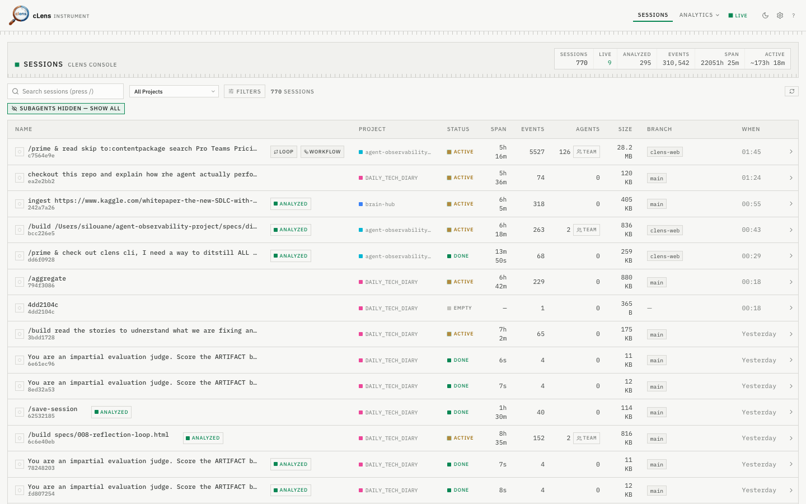
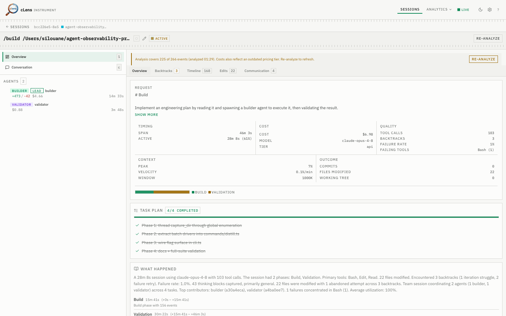
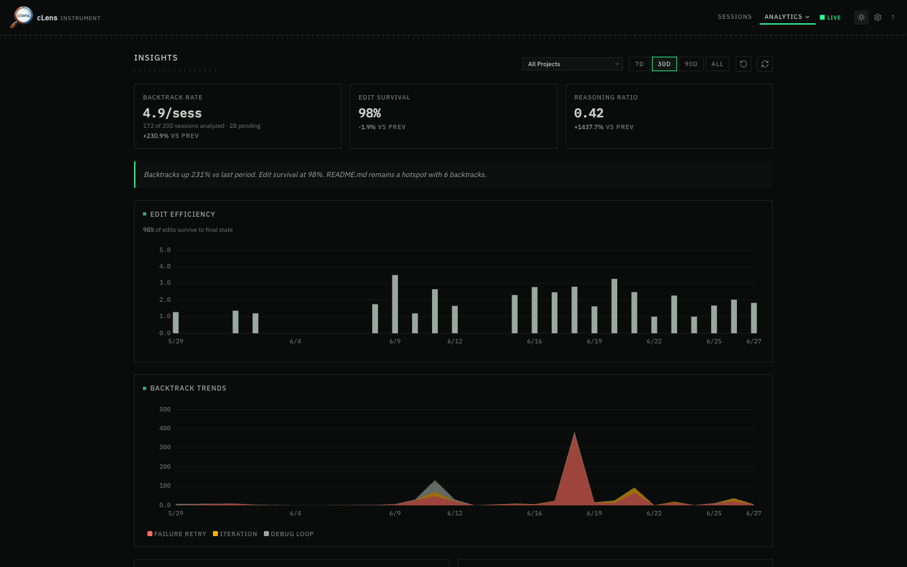

Decision trace
See where it changed course.
Backtracks and structural decision points laid out on a timeline, traced to the reasoning text behind them. cLens surfaces where the run pivoted — it doesn't judge it.

Local-first observability for Claude Code. Zero instrumentation, never phones home — cLens reconstructs any session from the JSONL Claude Code already writes.
$ npm i -g @silou/clens && clens init
The package is @silou/clens; the command it installs is clens.

What it is
cLens reads the JSONL Claude Code already writes via native hooks, stores everything in a local
.clens/ folder in your repo, and distills it offline. Nothing is uploaded, ever.
How, not just how much
decision trace
Other tools meter cost and tokens. cLens reconstructs the decision trace — backtracks, decision points, edit-chains, and plan-drift.
100% local
~2ms / event
No SDK to wire up, no collector, no server, no account. Native hooks append events to flat JSONL. Your traces never leave your machine.
Honest by design
estimated, labeled
Cost is labeled estimated, decisions are labeled structural, outcomes by completion + files touched. cLens never invents precision it doesn't have.
When a Claude Code agent runs 40 minutes, edits a dozen files, backtracks twice and spawns sub-agents, the chat log is a wall of text. You can't see where it changed its mind, which reasoning produced which edit, or where it drifted from the plan. Production LLM-observability tools don't help — they're built to meter tokens in deployed apps, not to reconstruct a coding session. So you scroll, and guess.
Decision trace
Backtracks and structural decision points laid out on a timeline, traced to the reasoning text behind them. cLens surfaces where the run pivoted — it doesn't judge it.

Edit chains · plan drift
Each file change linked back to the thinking block that produced it — including edits the agent later abandoned. Point it at your spec and it diffs intended vs. actual.
Multi-agent · cross-session
Communication graph and per-agent metrics when a session spawns sub-agents, plus cross-session analytics over your whole history. Cost shown is labeled estimated. (Multi-agent collaboration is a Team-tier feature.)

cLens has no server, no cloud, no account, no telemetry. A compiled hook binary appends events to flat JSONL in your repo at ~2ms per event. Full tool-call payloads are written locally, so you own the data — and nothing is ever transmitted. MIT licensed: read the capture path yourself.
01
npm i -g @silou/clens
Install the CLI.
02
clens init
Register the Claude Code hooks — one time, per repo.
03
clens web
Open the local dashboard, or run clens distill --last / clens what --last in the terminal.
$ npm i -g @silou/clens $ clens init # use Claude Code normally, then… $ clens distill --last && clens what --last
The package is @silou/clens; the command it installs is clens.
Free
$0
forever · MIT
Try it; capture sessions and read the raw timeline.
Individual
$12 / mo
$120 / yr · 2 months free
Solo devs who want the full local analysis suite.
Team
$24 / seat / mo
$240 / seat / yr · 3-seat min
Teams running multi-agent workflows together.
Open-core: capture + raw viewing are free and MIT forever. Individual is a license key unlocking the full local suite (zero backend). Team adds the cloud-sync/collab backend — that's what the ~2× seat premium funds. Annual ≈ 17% off. Pricing is per seat, never per trace.
No. Zero network; everything stays in a local .clens/ folder in your repo.
ccusage meters cost and tokens from the same local JSONL. cLens adds the decision analysis — backtracks, edit-chains, plan-drift — what it did, not just what it cost.
Those instrument production LLM apps and ship traces to a server. cLens is zero-setup, local, and Claude-Code-specific.
No — they're estimated (cache reads dominate token accounting). We label them as such throughout the UI.
Yes, MIT. Capture and raw viewing are free forever; paid tiers unlock the full analysis suite and team/cloud features.
Today: Claude Code. OpenTelemetry GenAI export lets you interoperate with other tooling.
Local-first, open source, two commands to start.
$ npm i -g @silou/clens && clens init